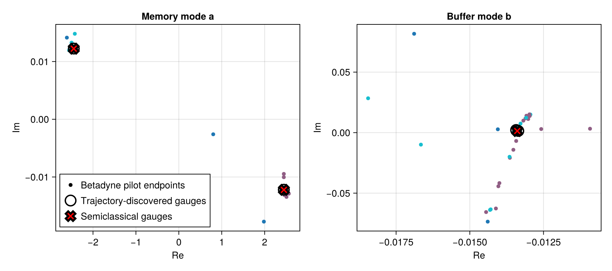
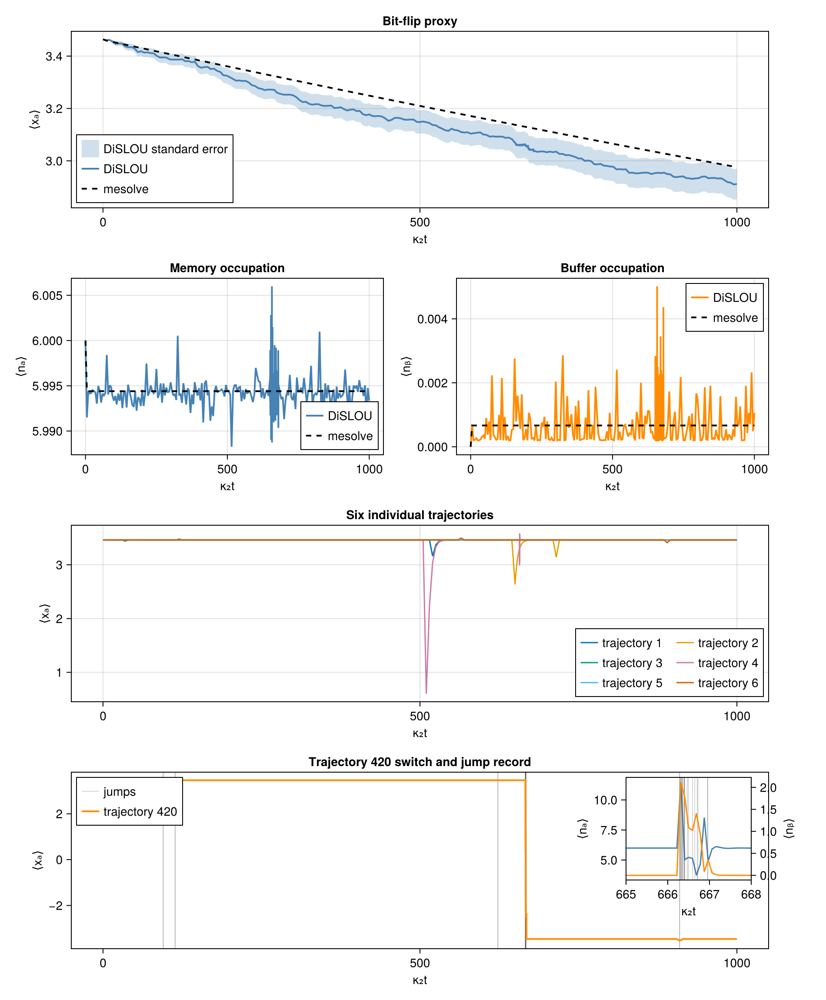
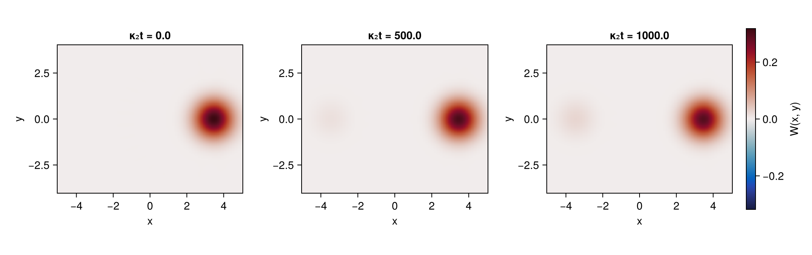
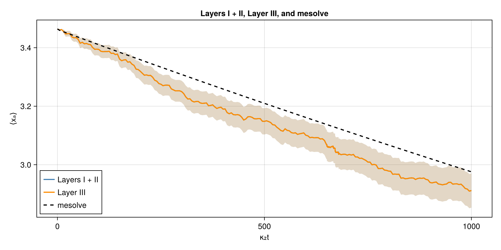

Two-mode ideal cat
Here we consider an ideal two-mode parametrically coupled driven-dissipative system, known for hosting Schr\"odinger cat states.
Run the code blocks in order in one Julia session, starting from the repository root. See Running the examples for the environment setup.
- Prepare the environment
- Load the packages
- Ideal cat model (Section 5.1)
- Semiclassical and trajectory branch discovery
- Layers I and II
- Memory-mode Wigner snapshots
- Layer III
Prepare the environment
import Pkg
repo_root = pwd() # Start Julia from the repository root.
examples_dir = joinpath(repo_root, "examples")
Pkg.activate(examples_dir)
Pkg.develop(Pkg.PackageSpec(path=repo_root))
Pkg.instantiate()Load the packages
using CairoMakie
using Clustering
using DiSLOUTrajectories
using LinearAlgebra
using QuantumToolbox
import QuantumCumulantsIdeal cat model (Section 5.1)
The memory mode $a$ is stabilized by a lossy buffer mode $b$. Equation (24) with $\Delta_a=\Delta_b=K_b=\chi=0$ and real $\varepsilon_b$ gives
\[H=-\frac{K_a}{2}a^{\dagger 2}a^2+g_2\left(a^2b^\dagger+a^{\dagger 2}b\right)+\varepsilon_b\left(b+b^\dagger\right),\]
with the jump operators of Eq. (25),
\[C_1=\sqrt{\kappa_1}\,a,\qquad C_b=\sqrt{\kappa_b}\,b,\qquad C_\phi=\sqrt{\kappa_\phi}\,a^\dagger a.\]
The code's K denotes $K_a=-0.01$. We use $g_2=\sqrt5$, $\varepsilon_b=-6\sqrt5$, $\kappa_1=0.01$, $\kappa_b=20$, $\kappa_\phi=0.001$, and initial coherent amplitude $\alpha=\sqrt6$, matching the nominal occupation $|\alpha|^2\simeq6$ in Section 5.1. The real negative drive fixes the example phase convention; Section 5.1 instead fixes it through $\operatorname{Tr}[a^2\rho_{\rm ss}]=\alpha^2>0$. The effective two-photon loss rate is $\kappa_2=4|g_2|^2/\kappa_b=1$. The Fock cutoffs are $N_a=20$, $N_b=6$.
Na, Nb = 20, 6
K, g2 = -0.01, sqrt(5.0)
εb = -6.0 * sqrt(5.0)
κ1, κb, κφ = 0.01, 20.0, 0.001
α = sqrt(6.0)
κ2 = 4abs2(g2) / κb
# H (Eq. 24); K denotes K_a.
cat_hamiltonian(a, b) = -(K / 2) * adjoint(a)^2 * a^2 +
g2 * (a^2 * adjoint(b) + adjoint(a)^2 * b) +
εb * (b + adjoint(b))
# C₁, C_b, C_ϕ (Eq. 25).
cat_collapse_operators(a, b) = [
sqrt(κ1) * a,
sqrt(κb) * b,
sqrt(κφ) * (adjoint(a) * a),
]
a = tensor(destroy(Na), qeye(Nb))
b = tensor(qeye(Na), destroy(Nb))
na, nb = adjoint(a) * a, adjoint(b) * b
xa = (a + adjoint(a)) / sqrt(2)
H = cat_hamiltonian(a, b)
c_ops = cat_collapse_operators(a, b)
ψ0 = tensor(coherent(Na, α), fock(Nb, 0))
(; Na, Nb, α, κ2, initial_xa=real(expect(xa, ψ0)))(Na = 20, Nb = 6, α = 2.449489742783178, κ2 = 1.0000000000000002, initial_xa = 3.4640513712171925)Semiclassical and trajectory branch discovery
The semiclassical centers $(\alpha_g,\beta_g)$ determine $\zeta_\mu^{(g)}$ through Eq. (A.6). The trajectory discovery method uses a betadyne unraveling: a large local-oscillator displacement is added to the memory-loss channel, while the buffer-loss and dephasing channels are left unchanged. This is needed to distinguish the $+\alpha$ and $-\alpha$ lobes, otherwise the trajectories would stabilize to cat states.[unraveling] The code variable β is the displacement $\zeta_1=2\sqrt{\kappa_1}\alpha$, distinct from the buffer amplitude $\beta_g$.
sc = discover_gauges(
cat_hamiltonian,
cat_collapse_operators;
method=:semiclassical,
limits=(Na - 1, Nb - 1),
)
β = 2sqrt(κ1) * α
betadyne_shifts = ComplexF64[β, 0, 0]
trajectory_gauges = discover_gauges(
H,
c_ops;
method=:trajectories,
mode_ops=[a, b],
mode_dims=[Na, Nb],
discovery_time=40.0,
seed_radii=[sqrt(Na - 1), sqrt(Nb - 1)],
cluster_scales=[1.0, 0.1],
step=1.0,
nseeds=300,
terminal_window=2.0,
preliminary_shifts=betadyne_shifts,
dbscan_radius=0.5,
min_neighbors=10,
min_weight=0.02,
seed=1,
ensemblealg=:threads,
)
preflight_positions = trajectory_gauges.diagnostics.terminal_means
preflight_labels = trajectory_gauges.diagnostics.labels
trajectory_centers = trajectory_gauges.centers
semiclassical_centers = sc.centers
(;
betadyne_amplitude=β,
preflight_trajectories=size(preflight_positions, 2),
trajectory_gauges=size(trajectory_centers, 2),
semiclassical_gauges=size(semiclassical_centers, 2),
)(betadyne_amplitude = 0.4898979485566356, preflight_trajectories = 300, trajectory_gauges = 2, semiclassical_gauges = 2)Plot the pilot endpoints and both sets of centers for each mode.
fig_branches = Figure(size=(900, 400))
for (column, mode, title) in ((1, 1, "Memory mode a"), (2, 2, "Buffer mode b"))
ax = Axis(
fig_branches[1, column];
xlabel="Re",
ylabel="Im",
title,
)
scatter!(
ax,
real.(preflight_positions[mode, :]),
imag.(preflight_positions[mode, :]);
color=preflight_labels,
colormap=:tab10,
markersize=8,
label="Betadyne pilot endpoints",
)
scatter!(
ax,
real.(trajectory_centers[mode, :]),
imag.(trajectory_centers[mode, :]);
marker=:circle,
markersize=22,
color=:transparent,
strokecolor=:black,
strokewidth=2,
label="Trajectory-discovered gauges",
)
scatter!(
ax,
real.(semiclassical_centers[mode, :]),
imag.(semiclassical_centers[mode, :]);
marker=:xcross,
markersize=20,
color=:red,
strokewidth=3,
label="Semiclassical gauges",
)
column == 1 && axislegend(ax; position=:lb)
end
fig_branches
Layers I and II
Start in $|+\alpha\rangle\otimes|0\rangle$ and follow the quadrature $\langle x_a\rangle=\langle(a+a^\dagger)/\sqrt2\rangle$. A master equation evolution provides the reference. DiSLOU uses the semiclassical gauges above with 1024 trajectories.
coarse_tlist = collect(range(0.0, 1000.0 / κ2; length=201))
switch_detail_tlist = collect(range(650.0 / κ2, 680.0 / κ2; length=321))
tlist = sort!(unique!(vcat(coarse_tlist, switch_detail_tlist)))
snapshot_times = [0.0, 500.0, 1000.0] ./ κ2
ntraj = 1024
ensemble_seed = 20260831
mesolve_sol = mesolve(
H,
ψ0,
tlist,
c_ops;
e_ops=[xa, na, nb],
progress_bar=false,
reltol=1e-8,
abstol=1e-10,
)
sol = dislou_solve(
H,
ψ0,
tlist,
c_ops;
e_ops=[xa, na, nb],
gauge_set=sc,
ntraj,
ensemblealg=:threads,
seed=ensemble_seed,
saveat=snapshot_times,
save_trajectories=true,
)DiSLOUSolution(ntraj=1024, Ne=3, Nt=519, total_jumps=16601)Compare observables and inspect a switch
The figure shows the memory quadrature, both occupations, six individual trajectories, and a closer view of a persistent lobe switch with its recorded jumps. The detailed time grid in the preceding block supports this last panel.
observable_mean = real.(sol.expect)
observable_sem = sol.expect_sem
mesolve_expect = real.(mesolve_sol.expect)
fig_observables = Figure(size=(950, 1150))
ax_x = Axis(
fig_observables[1, 1:2];
xlabel="κ₂t",
ylabel="⟨xₐ⟩",
title="Bit-flip proxy",
)
band!(
ax_x,
κ2 .* tlist,
observable_mean[1, :] .- observable_sem[1, :],
observable_mean[1, :] .+ observable_sem[1, :];
color=(:steelblue, 0.25),
label="DiSLOU standard error",
)
lines!(ax_x, κ2 .* tlist, observable_mean[1, :]; color=:steelblue, linewidth=2, label="DiSLOU")
lines!(ax_x, κ2 .* tlist, mesolve_expect[1, :]; color=:black, linestyle=:dash, linewidth=2, label="mesolve")
axislegend(ax_x; position=:lb)
ax_na = Axis(fig_observables[2, 1]; xlabel="κ₂t", ylabel="⟨nₐ⟩", title="Memory occupation")
lines!(ax_na, κ2 .* tlist, observable_mean[2, :]; color=:steelblue, linewidth=2, label="DiSLOU")
lines!(ax_na, κ2 .* tlist, mesolve_expect[2, :]; color=:black, linestyle=:dash, linewidth=2, label="mesolve")
axislegend(ax_na; position=:rb)
ax_nb = Axis(fig_observables[2, 2]; xlabel="κ₂t", ylabel="⟨nᵦ⟩", title="Buffer occupation")
lines!(ax_nb, κ2 .* tlist, observable_mean[3, :]; color=:darkorange, linewidth=2, label="DiSLOU")
lines!(ax_nb, κ2 .* tlist, mesolve_expect[3, :]; color=:black, linestyle=:dash, linewidth=2, label="mesolve")
axislegend(ax_nb; position=:rt)
ax_trajectories = Axis(
fig_observables[3, 1:2];
xlabel="κ₂t",
ylabel="⟨xₐ⟩",
title="Six individual trajectories",
)
for trajectory in 1:6
lines!(
ax_trajectories,
κ2 .* tlist,
real.(sol.trajectory_expect[1, trajectory, :]);
label="trajectory $trajectory",
)
end
axislegend(ax_trajectories; position=:rb, nbanks=2)
switch_window = (665.0, 668.0)
lobe_threshold = real(expect(xa, ψ0)) / 2
function persistent_switch_sample(trajectory_x)
lobe = 1
candidate = nothing
for sample in eachindex(trajectory_x)
scaled_time = κ2 * tlist[sample]
if lobe == 1 && trajectory_x[sample] <= -lobe_threshold
lobe = -1
candidate = switch_window[1] <= scaled_time <= switch_window[2] ? sample : nothing
elseif lobe == -1 && trajectory_x[sample] >= lobe_threshold
lobe = 1
candidate = nothing
end
end
return candidate
end
switch_candidates = Tuple{Int,Int}[]
for trajectory in axes(sol.trajectory_expect, 2)
sample = persistent_switch_sample(real.(sol.trajectory_expect[1, trajectory, :]))
isnothing(sample) || push!(switch_candidates, (trajectory, sample))
end
isempty(switch_candidates) && error("no persistent trajectory switch found in κ₂t ∈ $(switch_window)")
trajectory_index, switch_sample = argmin(
candidate -> abs(κ2 * tlist[candidate[2]] - sum(switch_window) / 2),
switch_candidates,
)
trajectory_x = real.(sol.trajectory_expect[1, trajectory_index, :])
crossing_interval = findlast(
index -> signbit(trajectory_x[index]) != signbit(trajectory_x[index + 1]),
1:switch_sample-1,
)
crossing_interval === nothing && error("trajectory $trajectory_index has no sign crossing")
crossing_guess = (tlist[crossing_interval] + tlist[crossing_interval + 1]) / 2
jump_times = sol.col_times[trajectory_index]
isempty(jump_times) && error("trajectory $trajectory_index has no recorded jumps")
switch_time = jump_times[argmin(abs.(jump_times .- crossing_guess))]
ax_switch = Axis(
fig_observables[4, 1:2];
xlabel="κ₂t",
ylabel="⟨xₐ⟩",
title="Trajectory $trajectory_index switch and jump record",
xgridvisible=false,
ygridvisible=false,
)
vlines!(
ax_switch,
κ2 .* jump_times;
color=(:gray35, 0.35),
linewidth=0.7,
label="jumps",
)
lines!(
ax_switch,
κ2 .* tlist,
trajectory_x;
color=:darkorange,
linewidth=2,
label="trajectory $trajectory_index",
)
axislegend(ax_switch; position=:lt)
zoom_indices = findall(t -> switch_window[1] <= κ2 * t <= switch_window[2], tlist)
zoom_times = κ2 .* tlist[zoom_indices]
inset_options = (;
width=Relative(0.18),
height=Relative(0.58),
halign=0.97,
valign=0.93,
tellwidth=false,
tellheight=false,
xgridvisible=false,
ygridvisible=false,
)
ax_na_zoom = Axis(
fig_observables[4, 1:2];
inset_options...,
xlabel="κ₂t",
ylabel="⟨nₐ⟩",
backgroundcolor=:white,
)
lines!(
ax_na_zoom,
zoom_times,
real.(sol.trajectory_expect[2, trajectory_index, zoom_indices]);
color=:steelblue,
linewidth=1.5,
)
vlines!(ax_na_zoom, κ2 .* jump_times; color=(:gray35, 0.35), linewidth=0.7)
ax_nb_zoom = Axis(
fig_observables[4, 1:2];
inset_options...,
yaxisposition=:right,
ylabel="⟨nᵦ⟩",
backgroundcolor=:transparent,
)
lines!(
ax_nb_zoom,
zoom_times,
real.(sol.trajectory_expect[3, trajectory_index, zoom_indices]);
color=:darkorange,
linewidth=1.5,
)
hidespines!(ax_nb_zoom, :l, :b, :t)
hidexdecorations!(ax_nb_zoom)
linkxaxes!(ax_na_zoom, ax_nb_zoom)
xlims!(ax_na_zoom, switch_window...)
fig_observables
Memory-mode Wigner snapshots
Trace out the buffer from each saved ensemble state, then plot the memory Wigner function at the three snapshot times using a shared color scale.
xvec = collect(range(-5.0, 5.0; length=121))
yvec = collect(range(-4.0, 4.0; length=121))
memory_states = [ptrace(state, 1) for state in sol.states]
wigner_values = [wigner(state, xvec, yvec) for state in memory_states]
wigner_plots = transpose.(wigner_values)
color_limit = maximum(maximum(abs, W) for W in wigner_values)
fig_wigner = Figure(size=(1050, 330))
heatmaps = Any[]
for (column, time, W) in zip(1:3, snapshot_times, wigner_plots)
@assert size(W) == (length(xvec), length(yvec))
ax = Axis(
fig_wigner[1, column];
xlabel="x",
ylabel="y",
title="κ₂t = $(κ2 * time)",
aspect=DataAspect(),
)
push!(
heatmaps,
heatmap!(
ax,
xvec,
yvec,
W;
colormap=:balance,
colorrange=(-color_limit, color_limit),
),
)
end
Colorbar(fig_wigner[1, 4], first(heatmaps); label="W(x, y)")
fig_wigner
Layer III
Use $m^{(s)}=60$ slow modes per gauge and residual tolerance $r_{\rm tol}=10^{-3}$ (Eq. 21), with $s=\pm1$.
layer3_sol = dislou_solve(
H,
ψ0,
tlist,
c_ops;
e_ops=[xa, na, nb],
gauge_set=sc,
ntraj,
ensemblealg=:threads,
seed=ensemble_seed,
layer3=true,
layer3_sizes=[60, 60],
residual_tolerance=1e-3,
)DiSLOUSolution(ntraj=1024, Ne=3, Nt=519, total_jumps=16601)Compare the memory-quadrature mean and its standard error with the full-space ensemble and the master-equation solution.
layer3_mean = real.(layer3_sol.expect)
layer3_sem = layer3_sol.expect_sem
fig_validation = Figure(size=(900, 450))
ax_validation = Axis(
fig_validation[1, 1];
xlabel="κ₂t",
ylabel="⟨xₐ⟩",
title="Layers I + II, Layer III, and mesolve",
)
band!(
ax_validation,
κ2 .* tlist,
observable_mean[1, :] .- observable_sem[1, :],
observable_mean[1, :] .+ observable_sem[1, :];
color=(:steelblue, 0.18),
)
band!(
ax_validation,
κ2 .* tlist,
layer3_mean[1, :] .- layer3_sem[1, :],
layer3_mean[1, :] .+ layer3_sem[1, :];
color=(:darkorange, 0.18),
)
lines!(ax_validation, κ2 .* tlist, observable_mean[1, :]; color=:steelblue, linewidth=2, label="Layers I + II")
lines!(ax_validation, κ2 .* tlist, layer3_mean[1, :]; color=:darkorange, linewidth=2, label="Layer III")
lines!(ax_validation, κ2 .* tlist, mesolve_expect[1, :]; color=:black, linestyle=:dash, linewidth=2, label="mesolve")
axislegend(ax_validation; position=:lb)
fig_validation
The two DiSLOU curves nearly overlap, confirming the accuracy of the method in this model.
Continue with the detuned model for a more realistic parameter set, and three metastable states.
- unravelingThe unraveling dependence of the conditioned state in a two-photon-driven Kerr resonator was analyzed by N. Bartolo, F. Minganti, J. Lolli, and C. Ciuti, Eur. Phys. J. Spec. Top. 226, 2705 (2017): photon counting produces jumps between even- and odd-parity cats, whereas homodyne monitoring selects coherent states of opposite phase. The betadyne unraveling used here replaces the infinite local-oscillator strength of the homodyne limit with a finite displaced jump process, as exploited for bit-flip statistics by F. Ferrari, J. Cohen, V. Savona, and F. Minganti, arXiv:2605.24100 (2026).